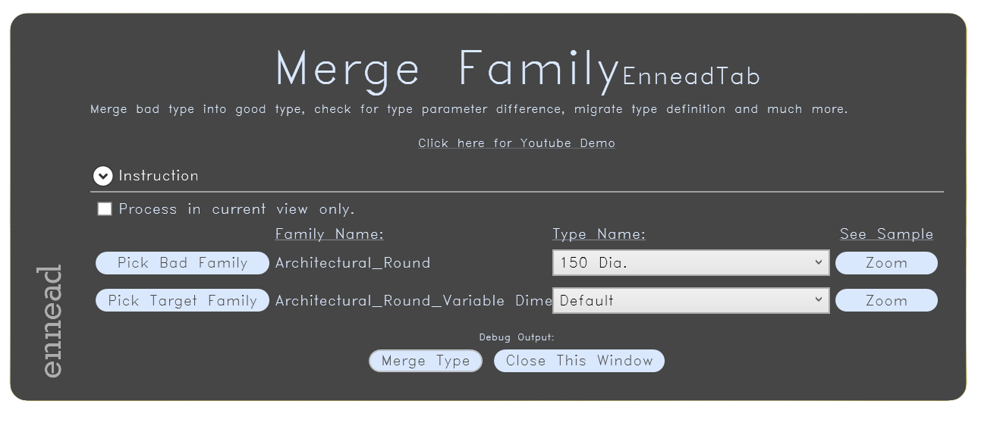
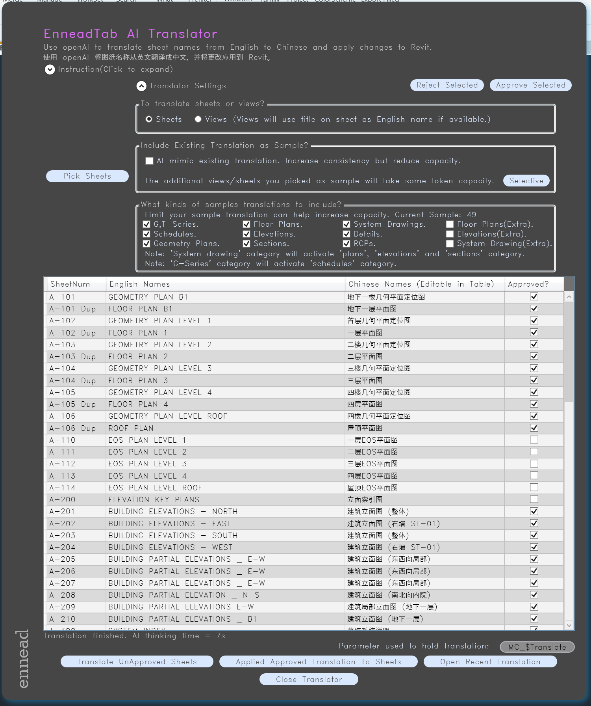
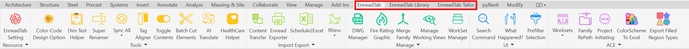
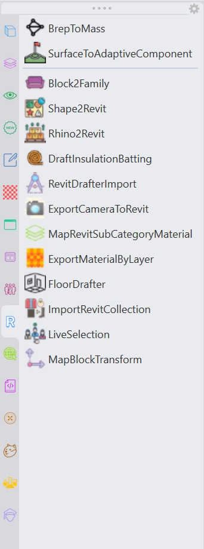

EnneadTabWiki
Discover 479 tools
Popular: 86
Explore the documentation for Rhino and Revit.
Installation
EnneadTab-For-Rhino Wiki
EnneadTab-For-Revit Wiki
CAD Wiki
EnneadTab For X is a crossplatform plugin system for architects with easy to use tools without visual scripting skill needed.
It provides functions in modeling, scheduling, drafting, QAQC, documentation, pre-rendering, model cleanup, interoperability, etc.
It also has many tools tailored specifically to project teams.
   